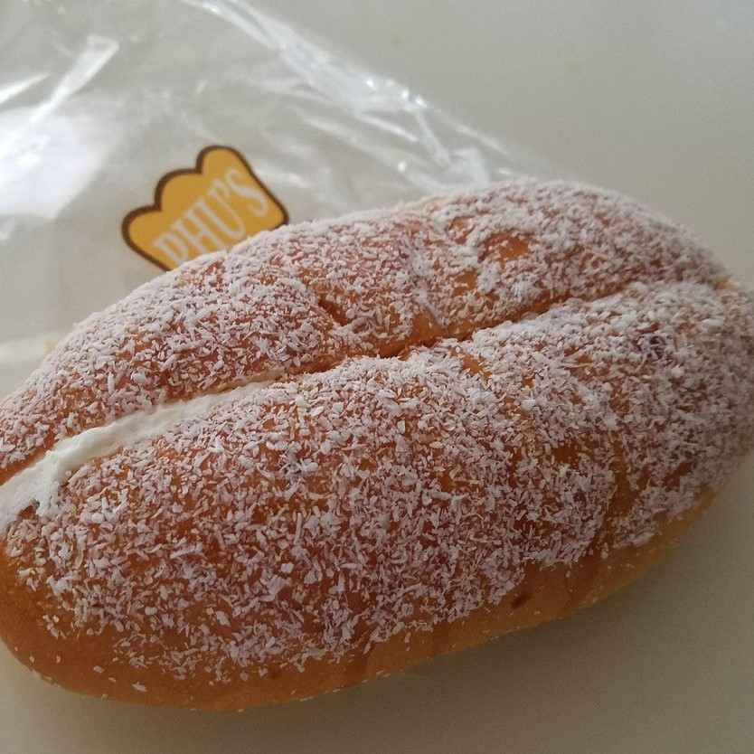
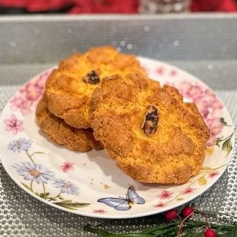
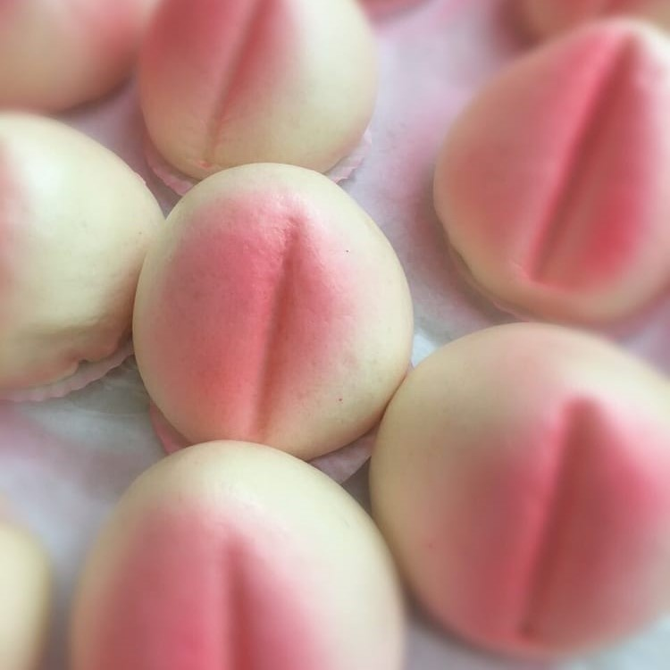
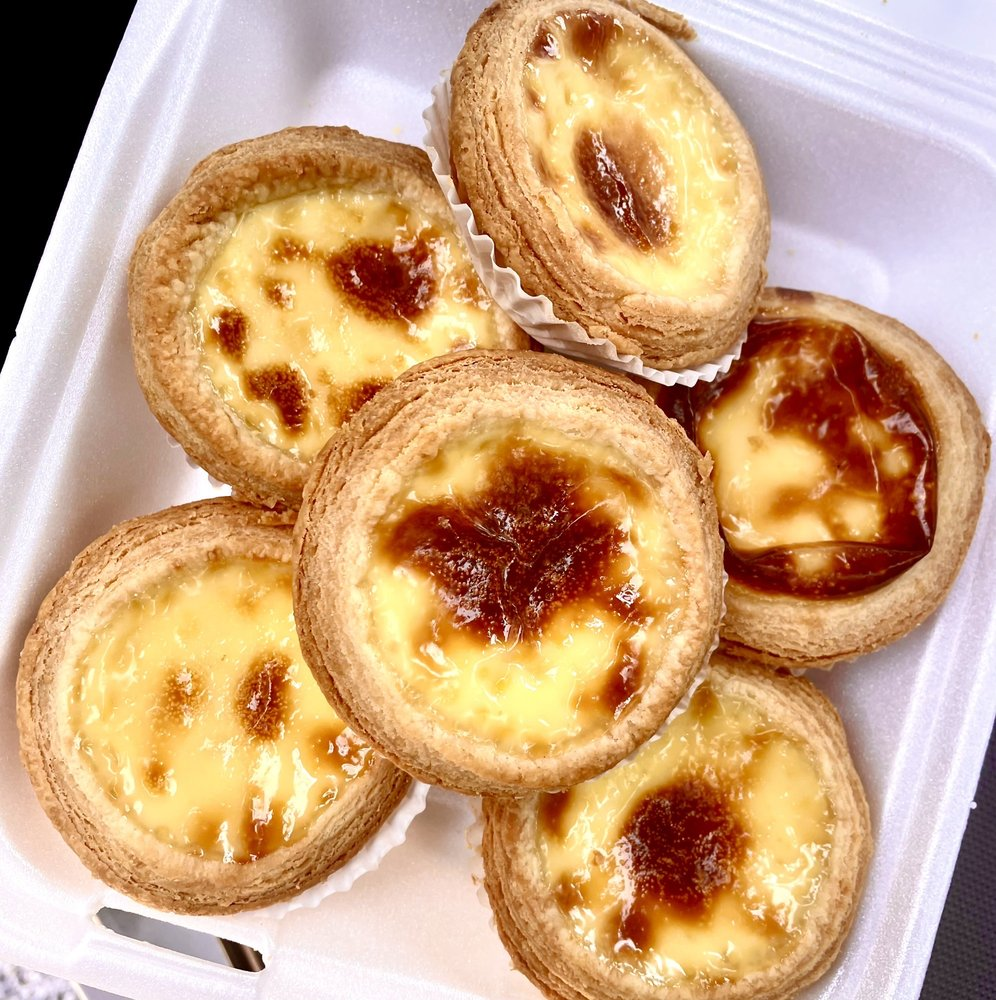
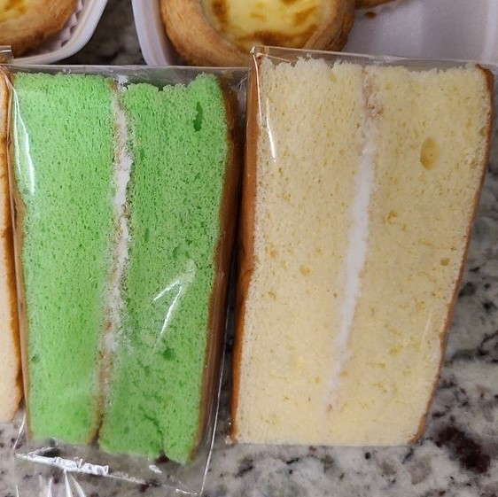
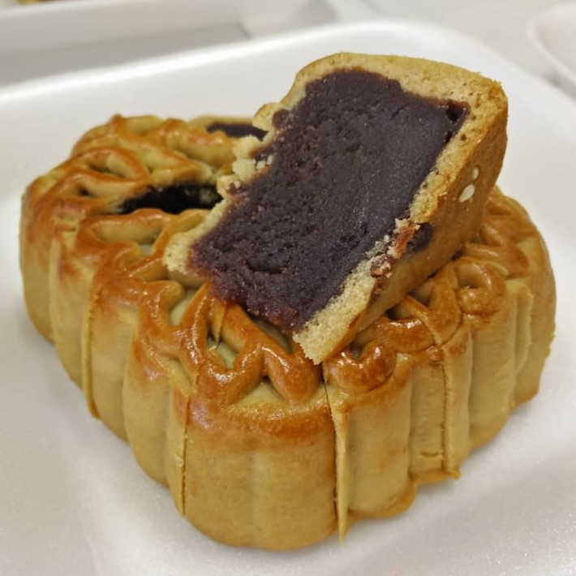
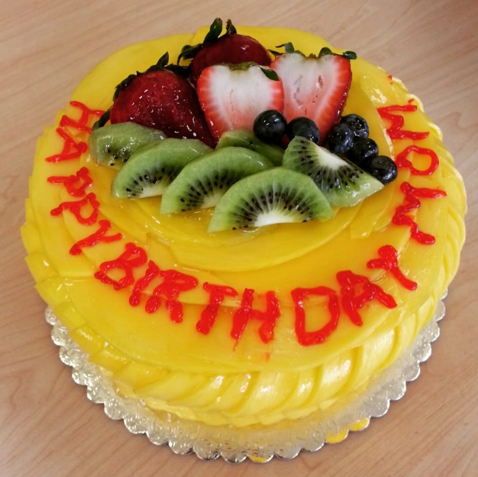
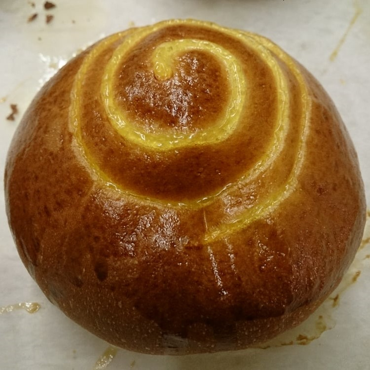

Welcome to Phu's Bakery!
Phu's Bakery is a small bakery located in Rosemead, CA. We specialize in Asian pastries and desserts.
Popular Items
About Us
Phu's Bakery is a small, family-owned bakery that has been serving up delectable Asian
pastries, bread,
and desserts since 2014. With a commitment to using only the freshest ingredients,
Phu's Bakery has become a go-to destination for those seeking an authentic experience.
At Phu's Bakery, we take pride in our extensive selection of mouth-watering baked goods. Our
menu features a variety
of Asian-inspired pastries, including egg tarts, bao buns, and mooncakes, as well as a wide
array of bread and desserts.
Our skilled bakers use only the highest quality ingredients, ensuring that each and every
item that
comes out of our ovens is of the utmost quality and taste.
We are passionate about providing our customers with the best possible baked goods and
customer service,
and we take great pride in being a part of the community. Whether you are a long-time
customer or a first-time visitor,
we look forward to sharing our delicious baked goods with you.
Photo Gallery
- 
- 
- 
- 
- 
- 
- 
- 